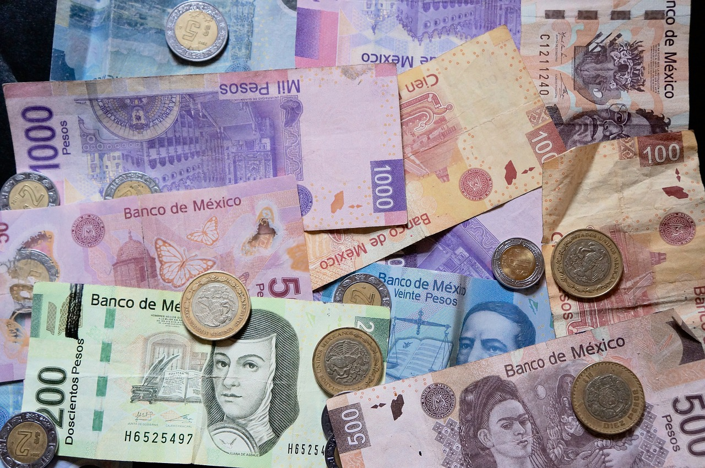
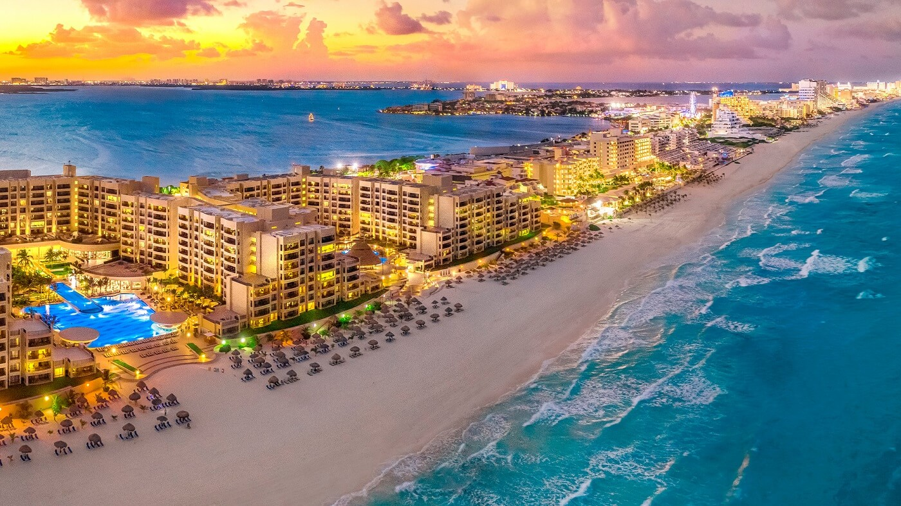
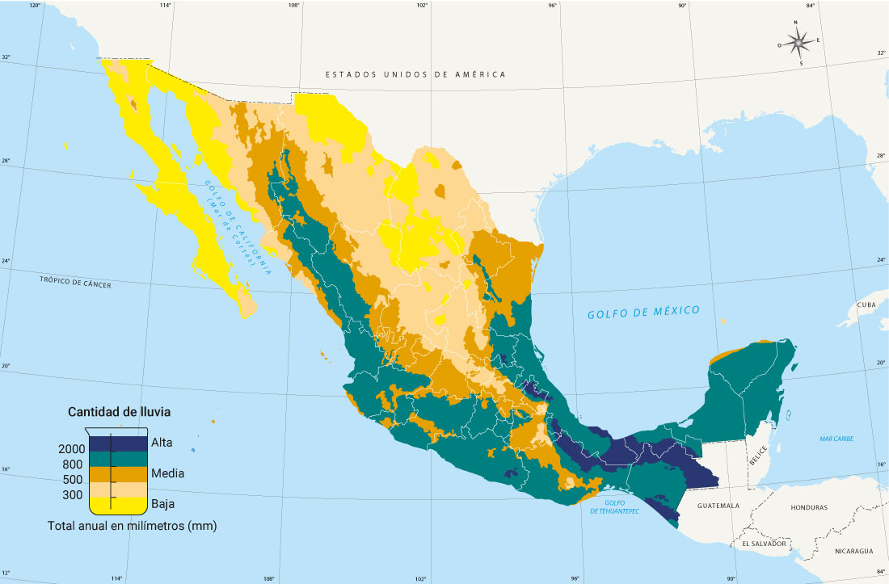
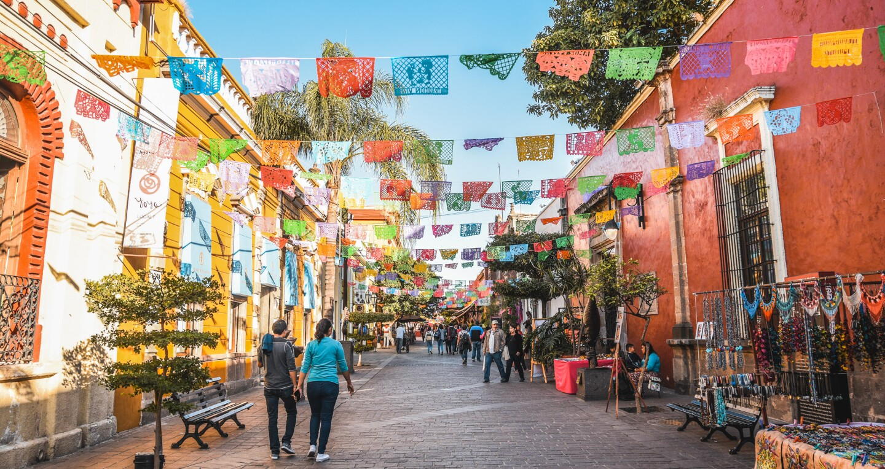
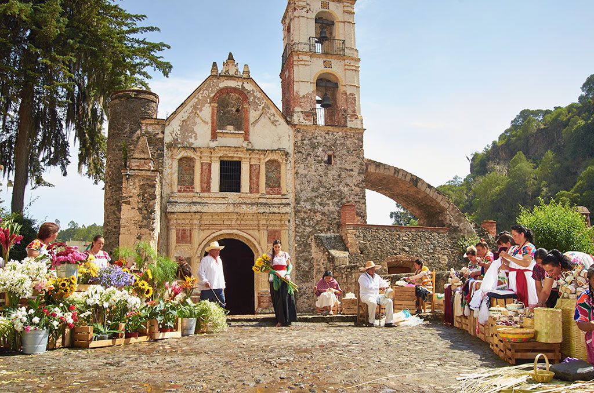
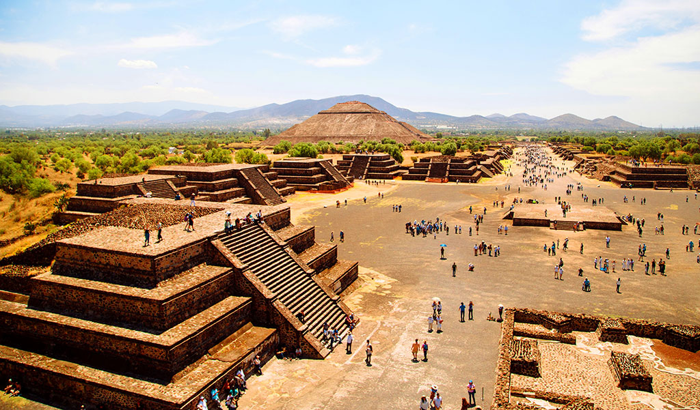
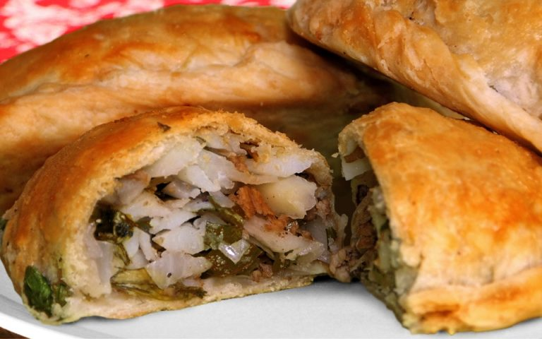
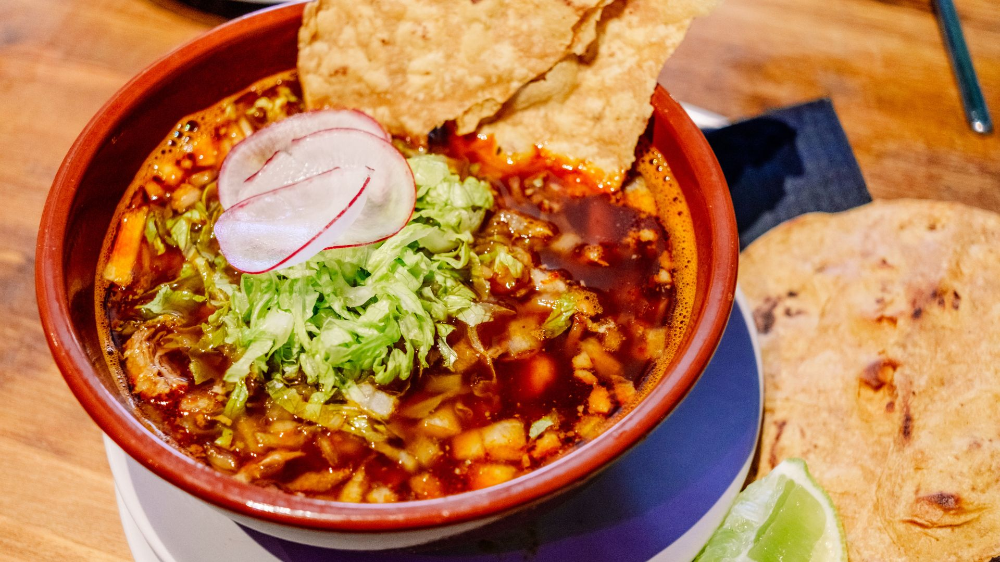
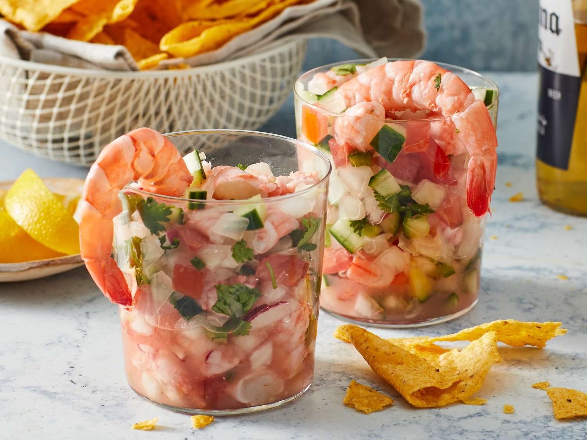
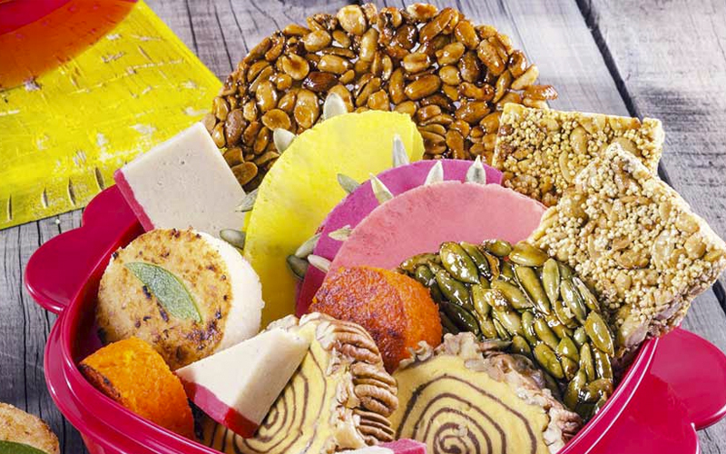

Mexico has a variety of transport for you to move around the cities with ease, such as metro stations, taxis (they are cheaper in some places), motorcycle taxis and buses.
However, you have to be very careful in public transport due to pickpockets in them, just try to have all your belongings well kept and out of your back pockets.

Cash
Always keep some cash with you when you travel to Mexico, because most of the street markets that are very common here do not accept card payments. In contrast, if you want
a more urban-like tourism, card is accepted in almost every shopping center or touristic place.

High-demand places
Even though places like Cancún are beautiful, we recommend you to avoid touristic common stores or beaches due to the prices huge increment for tourists and possible scams of
street vendors. If you would not mind to spend a little more to stay in this touristic places, there is no problem, but if you are searching for a more budget-friendly trip, there
are ecological reserves that lower their prices in exchage of rules applied to tourists as "no food allowed" and "take a shower before entering"; a really good choice for a calm
trip.

Weather
You shoukd also think what kind of weather would you like to experience. Mexico has a wide variety of weather, so it is recommended for you to check in what season you would like
to visit this country and where you would like to stay: beaches and northern/southern cities have a warmer weather, while central cities have a colder weather. Similarly, in winter,
the weather is colder generally but warmth is still felt in beaches, but in summer, temperatures can reach up to 40°C in beaches, but can feel better in commonly cold places such as
Puebla or Mexico State.
Destinations you must visit

Jalisco
There are various places you could visit in Jalisco. However, we recommend you two cities in particular: Puerto Vallarta and Guadalajara. Puerto Vallarta is one of the most common
and favorite places to visit for tourists because of its clear waters and diverse activities to do there, such as watching baby turtles, hiking, daily tours to hidden beaches and
even more, without being too expensive. In comparison, Guadalajara is the capital of Jalisco, bringing a perfect blend of history, culture, and modernity. In Guadalajara, you can
explore its Historic Downtown, famous for the Cathedral, the Hospicio Cabañas, and lively plazas; enjoy traditional cuisine such as torta ahogada and birria; and experience iconic
traditions like mariachi and charrería. In addition, the city offers vibrant nightlife, museums, artisan markets, and neighborhoods filled with urban art, making Guadalajara an
ideal destination for travelers seeking a cultural trip as well as those who enjoy traditional activities and international events.

Hidalgo
Hidalgo also offers unforgettable destinations; especially the towns of Huasca de Ocampo and Peña del Aire. Huasca de Ocampo, known as the first Pueblo Mágico in Mexico,
captivates visitors with its cobblestone streets, colorful houses, and natural wonders like the Basaltic Prisms, where volcanic columns meet cascading waterfalls. Visitors can
enjoy peaceful forest cabins, local crafts, traditional sweets, and guided tours through old mining haciendas. In contrast, Peña del Aire stands out for its breathtaking viewpoints
suspended over dramatic canyons, offering activities such as hiking, ziplining, and horseback rides. Its expansive landscapes are perfect for photography lovers and adventure
seekers alike, making both destinations ideal for travelers who want nature, culture, and authentic Mexican charm.

Mexico City
An exciting mix of history, art, and iconic landmarks, is found in Mexico City, especially while exploring the City Center, Coyoacán, and Teotihuacán. The City Center (Centro Histórico)
is the heart of the capital, home to the Zócalo, the Metropolitan Cathedral, and the Palacio de Bellas Artes; perfect for travelers who want to witness centuries of culture and
architecture. Meanwhile, Coyoacán provides a more relaxed atmosphere, with tree-lined streets, artisan markets, and the famous Frida Kahlo Museum, making it ideal for art lovers
and turists seeking a cozy, traditional vibe. Outside the city, Teotihuacán offers a completely different experience: exploring the ancient Pyramids of the Sun and the Moon, walking
along the Avenue of the Dead, and learning about one of the most important archaeological sites in the Americas. Together, these destinations give you a complete experience
of Mexico City’s vibrant past and present.
Quintana Roo
Quintana Roo is filled with stunning natural landscapes, especially in Playa El Cielo and the Akumal Ecological Reserve. Playa El Cielo, located near Cozumel, is famous for its
crystal-clear turquoise waters, creating the perfect spot for snorkeling and watching starfish and vibrant marine life. Its peaceful atmosphere and visibility make it ideal for
tourists seeking relaxing vacations surrounded by nature. On the other hand, the Akumal Ecological Reserve offers a more immersive and ecological adventure: visitors can swim
responsibly with sea turtles, explore cenotes, and walk through protected jungle areas. With its focus on conservation and sustainable tourism, Akumal provides a unique opportunity
to connect with wildlife in a respectful way. These destinations showcase Quintana Roo's natural beauty and ecological richness that make them unforgettable places to visit.
Additionally, here's an audio of the popular song "Cielito lindo" sung by Pedro Infante, a very well-known singer in Mexico:
Food to try

Pastes
Eating pastes is like tasting a piece of Hidalgo’s mining heritage and the fusion between Cornish and Mexican traditions. There is a wide variety of sweet and savory falvours and it
is perfect for eating while exploring towns like Real del Monte or Huasca de Ocampo, since they are portable. Finally, Pastes are similar to English pasties: a hand-held pastry
filled with many ingredients, traditionally potatoes, ground beef, and onions, but now also made with cheese, chicken, beans, or even sweet fillings like fruit.

Pozole
Trying pozole while visiting Jalisco is a must for any foodie or cultural explorer. This is a traditional Mexican stew, made with hominy, meat, and a blend of spices. It can be red,
green, or white Pozole and is served with fresh radishes, cabbage, lime, and tostadas. It is also a symbol of celebration and Mexican heritage, often enjoyed during festivals,
family gatherings, and special occasions.

Ceviche
When visiting Mexican coastal regions, like Puerto Vallarta in Jalisco or Quintana Roo, tasting ceviche is an absolute must. This refreshing dish features fresh fish or shrimp
marinated in lime juice and mixed with tomatoes, onions, cilantro, and chili peppers, creating a flavorful experience. Ceviche is not only delicious but also a reflection
of Mexico’s coastal culture, often served as a light meal or appetizer perfect for hot days by the ocean.

Traditional mexican candy
No trip to Mexico would be complete without trying traditional Mexican candy, a colorful and flavorful part of the country’s culinary heritage. From tamarind and chili sweets
like pulparindo, to fruit pastes (ate), cajeta (goat milk caramel), and obleas (thin wafers with sweet fillings), these handcrafted treats showc the creativity and various
flavors of Mexican cuisine. They are sold in markets, street stalls, and specialty shops throughout the country, making them an easy, delightful and unique snack for tourists.
Best seasons and budget
Best seasons to go to Mexico
In this video, there are other suggestions on where to go and it is categorized seasonally.
Budget
Here are some budget examples for your trip to Mexico according to the previously mentioned destinations.
Trip scenario
Duration
Budget style
Estimated total (EUR)
Mexico City (Centro + Coyoacán) + Teotihuacán day-trip
4 days
Budget
€172–258
Akumal + Playa El Cielo (comfortable beach holiday)